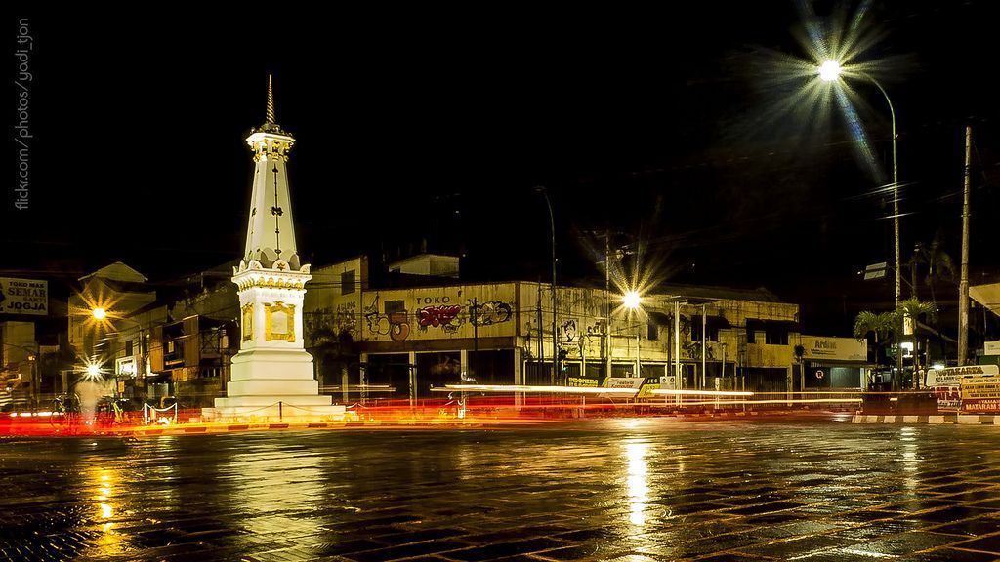

Yogyakarta, atau yang sering disebut Jogja, merupakan salah satu destinasi wisata paling populer di Indonesia yang menawarkan perpaduan antara budaya, sejarah, dan keindahan alam. Kota ini dikenal dengan berbagai objek wisata ikonik seperti Keraton Yogyakarta, Malioboro, serta Candi Prambanan. Selain itu, wisatawan juga dapat menikmati pesona pantai di wilayah Gunungkidul, menjelajahi kawasan perbukitan, hingga menyaksikan keindahan matahari terbit dari lereng Gunung Merapi.
Tidak hanya kaya akan destinasi wisata, Jogja juga terkenal sebagai kota yang menjunjung tinggi nilai budaya dan tradisi. Berbagai pertunjukan seni, kerajinan tangan, serta bangunan bersejarah dapat ditemukan hampir di setiap sudut kota. Suasana yang ramah dan biaya wisata yang relatif terjangkau menjadikan Jogja sebagai pilihan favorit bagi wisatawan keluarga, pelajar, maupun wisatawan mancanegara yang ingin mengenal budaya Jawa lebih dekat.
Dari sisi kuliner, Jogja menawarkan beragam hidangan khas yang menggugah selera. Salah satu yang paling terkenal adalah Gudeg, yaitu olahan nangka muda dengan cita rasa manis yang khas. Selain itu, wisatawan juga dapat menikmati Bakpia, sate klathak, hingga berbagai jajanan tradisional yang mudah ditemukan di pasar maupun pusat kuliner malam. Perpaduan antara kekayaan wisata dan kelezatan kuliner membuat Jogja menjadi kota yang selalu dirindukan untuk dikunjungi kembali.
Jika kamu ingin pergi ke Jogja kami sudah membuat daftar rekomendasi untuk kamu dibawah ini :
Tempat Wisata
Kuliner Hits
- Gudeg
- Sate Klathak
- Pasar Ngasem
Rekomendasi Tempat Wisata
1. Jalan Malioboro
Jalan ini menghubungkan Tugu Yogyakarta hingga menjelang kompleks Keraton Yogyakarta. Di sisi utara adalah Jalan Margo Utomo, yang terbentang dari selatan kawasan Tugu hingga sisi timur Stasiun Yogyakarta. Antara Jalan Margo Utomo dan Jalan Malioboro dipisahkan dengan perlintasan kereta api yang cukup unik, di mana perlintasan ini menggunakan palang pintu berjenis geser.[2]
Pada masa lalu, perlintasan ini dapat dilintasi oleh kendaraan umum sebagai penghubung Jalan Margo Utomo menuju Malioboro. Namun karena meningkatnya volume kendaraan yang melintas, membuat perlintasan ini hanya boleh dilintasi oleh kendaraan-kendaraan kecil seperti becak atau sepeda, sedangkan kendaraan lain harus memutar terlebih dahulu ke arah timur melewati Jembatan Kewek, kemudian berbelok ke arah barat melalui Jalan Abu Bakar Ali, barulah sampai di Jalan Malioboro.
Jalan Malioboro sebenarnya hanya terbentang dari sisi selatan rel kereta api, di depan Hotel Grand Inna hingga berakhir di Pasar Beringharjo sisi timur. Dari titik ini, nama jalan berubah menjadi Jalan Margo Mulyo hingga Titik Nol Kilometer Yogyakarta. Jalan Malioboro menjadi batas antara Kemantren Gedongtengen dan Kemantren Danurejan, di mana sisi barat Malioboro adalah wilayah dari kemantren Gedongtengen, dan sisi timur Malioboro adalah wilayah dari kemantren Danurejan. Sedangkan seluruh sisi jalan Margo Utomo adalah wilayah dari Kemantren Jetis, dan sisi jalan Margo Mulyo adalah wilayah dari Kemantren Gondomanan.
2. Candi Prambanan
Candi Prambanan adalah kompleks candi Hindu terbesar di Indonesia yang dibangun pada abad ke-9. Terletak sekitar 17 kilometer sebelah timur Yogyakarta, candi ini didedikasikan untuk Trimurti, tiga dewa utama dalam agama Hindu yaitu Brahma, Wisnu, dan Siwa.
Bangunan utama Candi Prambanan terdiri dari tiga candi tinggi yang megah dikelilingi oleh banyak candi perwara. Arsitektur candi ini menampilkan berbagai relief yang menceritakan kisah Ramayana, tampak dari ukiran batu yang indah dan detail pada dinding-dinding candi.
Selain keindahan arsitekturnya, Candi Prambanan juga menjadi pusat kegiatan seni dan budaya. Pada malam hari sering diadakan pertunjukan sendratari Ramayana yang memperlihatkan kisah epik dengan latar belakang candi, serta berbagai festival yang menarik banyak wisatawan domestik dan internasional.
3. Pantai Gunung Kidul
Pantai Gunung Kidul merupakan jajaran pantai cantik di pesisir selatan Yogyakarta yang terkenal dengan pasir putihnya, tebing karst, dan air laut yang jernih. Beberapa pantai populer di kawasan ini antara lain Pantai Indrayanti, Pantai Siung, dan Pantai Nglambor.
Wisatawan dapat menikmati kegiatan seperti berenang di teluk yang tenang, berselancar, berjemur, atau menjelajahi gua-gua kecil di sekitar pantai. Pemandangan senja di Pantai Gunung Kidul sangat menawan, cocok untuk berfoto dan menikmati suasana santai.
Untuk menuju kawasan ini, pengunjung biasanya melakukan perjalanan sekitar satu hingga dua jam dari pusat kota Yogyakarta. Sebaiknya membawa bekal, air minum, dan perlengkapan pantai karena fasilitas di beberapa lokasi masih terbatas.
Rekomendasi Kuliner
1. Gudeg
Gudeg adalah hidangan khas Jawa yang terbuat dari nangka muda yang dimasak lama dengan santan dan gula merah, menghasilkan cita rasa manis gurih yang khas. Biasanya disajikan bersama nasi, sambal krecek, telur pindang, ayam opor, dan suwiran ayam atau tempe.
Tempat gudeg enak di Jogja yang patut dicoba:
- Gudeg Yu Djum - terkenal dengan gudeg manis dan tekstur nangka yang empuk.
- Gudeg Pawon - gudeg tradisional yang disajikan langsung dari dapur berbentuk pawon.
- Gudeg Mbah Lindu - favorit di kalangan wisatawan untuk cita rasa otentik Jogja.
2. Sate Klathak
Sate Klathak adalah sate kambing khas wilayah Gunungkidul yang disajikan dengan bumbu sederhana namun beraroma kuat. Potongan daging kambing ditusuk dengan jeruji besi dan dibakar di atas arang, sehingga menghasilkan tekstur daging yang empuk di dalam dan sedikit renyah di bagian luar.
Berbeda dari sate biasa, Sate Klathak tidak memakai bumbu kacang. Saus kuah gulainya ringan dan gurih, memberikan keseimbangan sempurna antara rasa daging panggang dan kekayaan rempah. Hidangan ini sering disajikan dengan nasi putih hangat, sambal, dan potongan tomat segar.
Pengalaman makan Sate Klathak lebih dari sekadar kuliner, ia adalah perwujudan tradisi lokal yang sederhana tapi penuh cita rasa. Sate ini menjadi favorit wisatawan yang ingin mencicipi kuliner otentik Jogja di luar pusat kota.
Beberapa tempat makan sate klathak populer di Jogja:
- Sate Klathak Pak Pong - terkenal dengan porsi besar dan daging empuk.
- Sate Klathak Ngelos - favorit wisatawan karena sambal yang khas.
- Sate Klathak Samirono - pilihan tepat untuk merasakan suasana warung tradisional.
3. Pasar Ngasem
Pasar Ngasem adalah pasar tradisional yang terletak di pusat kota Yogyakarta, dekat dengan Keraton dan hanya beberapa langkah dari kawasan Malioboro. Pasar ini terkenal sebagai pusat jajanan dan kuliner khas Jogja yang ramai dikunjungi wisatawan lokal maupun luar kota.
Lokasi pasar berada di Jalan Ngasem, persisnya di sisi timur Jalan Malioboro, sehingga mudah dijangkau dengan berjalan kaki dari Alun-Alun Utara atau Tugu Yogyakarta.
Waktu terbaik untuk berkunjung adalah pagi hari antara pukul 08.00 hingga 11.00, saat pasar masih segar, pilihan makanan lengkap, dan suasana tidak terlalu panas. Jika ingin menikmati suasana malam, pasar ini juga tetap ramai setelah senja, namun area kuliner paling hidup di pagi hingga siang hari.
Beberapa kuliner yang patut dicoba di Pasar Ngasem adalah bakmi Jawa, gudeg telur, wedang ronde, lumpia basah, dan aneka jajanan tradisional seperti klepon serta kue putu. Jangan lupa mencicipi juga segelas es degan muda untuk menyegarkan tenggorokan setelah keliling pasar.